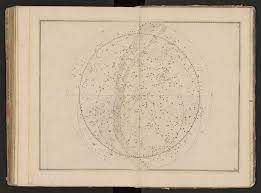
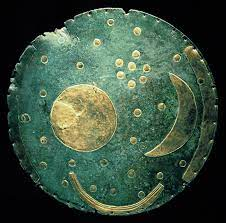
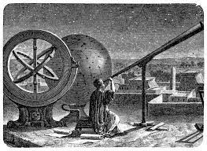
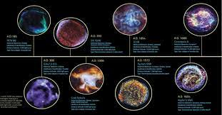

The History Of Astronomy





Astronomy is the oldest of the natural sciences, dating back to antiquity, with its origins in the religious, mythological, cosmological, calendrical, and astrological beliefs and practices of prehistory: vestiges of these are still found in astrology, a discipline long interwoven with public and governmental astronomy. It was not completely separated in Europe (see astrology and astronomy) during the Copernican Revolution starting in 1543. In some cultures, astronomical data was used for astrological prognostication.